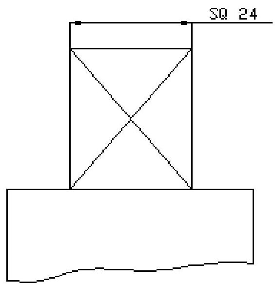
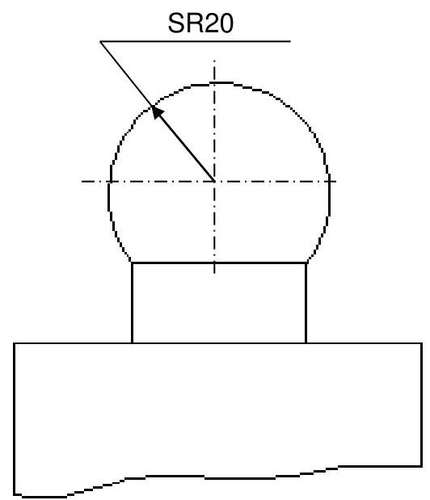

Dimensioning Technique
Definition & Elements
Dimensioning is a specification of the size and shape of a part or assembly. Every drawing showing the true shape of an object must supply its exact length, breadth, height, sizes and positions of holes, grooves etc. supplying this information on a drawing is called dimensioning.
Key Elements
- Dimension line: A thin continuous line terminated by arrowheads touching the outlines.
- Extension line: A thin continuous line drawn in extension of an outline.
- Arrowhead: Placed at each end of a dimension line. Its pointed end touches an outline or extension line. The size should be proportional to the thickness of the outline.
- Leader: One end terminates in an arrowhead (touching outer line) or dot (within outer line). The other end terminates in a horizontal line. Drawn at an angle not less than $30^{\circ}$.
Systems of Dimensioning
There are two primary systems for placing dimensions on a drawing.
Aligned Dimensioning System
The dimension is placed perpendicular to the dimension line in such a way that it may be read from the bottom edge or the right hand edge of the drawing sheet. The dimension should be placed near the middle and above.
Unidirectional Dimensioning System
In this system, all dimensions are so placed that they can be read from the bottom of the drawing sheet. The dimension lines are broken near the middle for inserting the dimensions. This system is mainly used for large drawings.
Arrangements & Specifics
Progressive or Parallel Dimensioning
All dimensions are shown from a common base line. Smaller dimensions should be placed nearer the view and larger further away so that extension lines do not cross dimension lines.
Specific Notations
Square Sections
Letter SQ should precede the dimension for a rod of square cross-section.
Spherical Parts
The word SPHERE should be placed before the dimension of a spherical part.
Standard Symbols
| Symbol | Abbreviation | Parameter |
|---|---|---|
| $\phi$ | DIA | DIAMETER |
| $S\phi$ | SPHER DIA | SPHERICAL DIAMETER |
| $R$ | R | RADIUS |
| $CR$ | CR | CONTROLLED RADIUS |
| $SR$ | SR | SPHERICAL RADIUS |
| $\cup$ | CBORE | COUNTERBORE / SPOTFACE |
| $\lor$ | CSK | COUNTERSINK |
| $\nabla$ | DP | DEEP |
| $\square$ | SQ | SQUARE |
Circles & Arcs
Dimensioning Circles
Various methods exist for dimensioning different sizes of circles.
Dimensioning Arcs
Dimension line for the radius should pass through the centre of the arc. Dimension an arc by its radius.